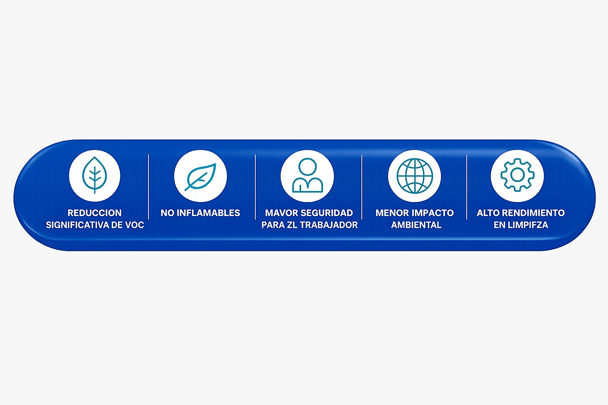

The graphic arts industry can present risks typical of industrial activity, and these can occur anywhere in the process: prepress (text and image processing), printing, and even in post-printing, which includes cleaning, binding, finishing, and final handling.
The risk from chemical substances continues during post-printing due to the cleaning of inking rollers, printing plates, cylinders, and so on — all impregnated with inks — whose proper cleaning is critical to maintain print quality.
Solvents are regularly used when a print job ends or there is a color change, to prevent presses from being left soiled with unusable inks. Solvents have a strong ability to dissolve or dilute greases and oils, and cleaning can be automatic or manual.
Common solvent classes in print shops include paraffins, aromatic compounds, alcohols, esters, ketones, and ethers. Individual compounds identified include cyclohexane, toluene, xylene, ethylbenzene, diethylbenzene, methanol, ethanol, isopropanol, isobutanol, cyclohexanol, ethyl acetate, methyl ethyl ketone, and methyl isobutyl ketone. The specific solvents used in each process (offset, rotogravure, flexography, screen printing, typography) are strongly dependent on country or region. They are used mainly in cleaning and degreasing operations for equipment and accessories.
However, most contain volatile organic compounds (VOCs) that evaporate easily, are flammable, and can dissolve in greases, so the risk of occupational and environmental exposure during their use is very high.

Solvents cause atmospheric contamination: they generate diffuse emissions that affect workers inside facilities, and point emissions at fixed sources such as chimneys or local extraction systems that disperse into the environment. The use of solvents, both industrial and domestic, is responsible for a quarter of the VOCs released into the atmosphere.
Exposure limit regulation in many countries is based on reference values such as Threshold Limit Values (TLV) in the United States or occupational exposure limits for chemical agents (VLA) in Spain, published annually by the National Institute of Occupational Safety and Health. Limits are often set for both peak exposures and 8-hour average exposures.
Important: the National Institute of Occupational Safety and Health recognizes that there are no safe exposure levels; limits are reference values and do not constitute a defined boundary between safe and dangerous situations.
Health effects
Prolonged exposure to these compounds can cause cancer, nervous system damage, kidney, liver, heart or lung damage, anemia and leukemia, skin damage, and harm to the reproductive and endocrine systems. Solvents can be absorbed through different routes:
Pulmonary route
The most important. Inhalation is the main route of occupational exposure. Organic solvents are volatile liquids whose vapors are lipid-soluble and are easily absorbed across the alveolar membrane into the bloodstream.
Dermal route
Ease of absorption depends on the chemical properties of the solvent (water- or fat-solubility), the condition of the skin, and the worker's hygiene habits.
Digestive route
Linked primarily to unsafe habits such as drinking, eating, or smoking at the workstation, where solvents are ingested through contaminated hands, drinks, food, or cigarettes.
Mitigation: substitute for safer alternatives
Organic solvents pose a serious hygiene risk. The most effective mitigation is substitution, whenever possible, of the products that generate the problem.
New alternatives have recently reached the market: cleaning products based on aqueous solutions or natural organic solvents. In both cases, the reduction in VOCs is very significant and worker exposure drops dramatically. Additionally, these products are non-flammable, which reduces the risk of fire in the workplace.

References
Want to reduce VOCs in your print shop?
Explore our water-based cleaners and non-flammable natural solvents for flexography and offset.
Contact Sales